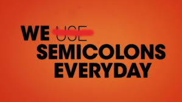
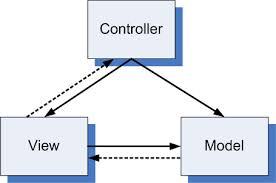
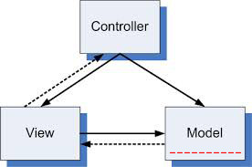
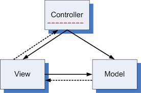
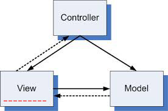

@Matous Kucera
Grails in Action
#Envelon s.r.o.
11.7.2013
Envelon s.r.o.
- Young start-up company
- Prague / Munich (Germany)
- Development on demand
- Own projects
- Web development - Grails
- Desktop app development
Matous Kucera
- Bc. computer science CTU Prague
- MSc. software engineering TU Munich (Germany)
- Co-founder of Envelon s.r.o.
- 4 - ? years of experiences with Grails
Grails

- Web application framework
- Rapid development framework
- Open source
- Convention over configuration
Grails 2.2.3
Why Grails?
-
Built on enterprise strong frameworks / Languages
- Java
- Spring
- Hibernate
-
Groovy
- Advanced JVM Language
-
Plug-in System
- ~ 950 plugins
- Rapid development framework
- Good Documentation
Groovy
Do I need it?
No
- You can start with Grails without knowledge of Groovy
Yes
- You should leverage Groovy!
- 99% of your future code in Grails
What's the Advantage of Groovy

package com.envelon.note
import com.envelon.pencil.Pencil
import org.joda.time.DateTime
class Note extends AbstractNote {
String content
String creator
DateTime timestamp
public String toString() {
return "[$timestamp - $creator] $content"
}
}
But There is More!
- Lambda Calculus & Closures
- Collections
- Elvis Operator
- Null Operand
- String Templates
- Meta Class
Grails Architecture
Model View Controller Pattern
Grails Domain Classes
~ Model

grails-app/domain/.../*.groovy
package com.envelon.miracleBalnk
import com.envelon.miracleBalnk.BankGroup
import com.envelon.miracleBalnk.client.Client
import com.envelon.miracleBalnk.crew.Director
class Bank {
String name
Director director
BankGroup bankGroup
static hasMany = [clients: Client]
static belongsTo = [BankGroup]
static constraints = {
name nullable: false, blank: false, unique: true
}
}
Grails Services
~ Controller

grails-app/services/.../*.groovy
class BankService {
static transactional = true
def acountService
def bankrupt() {
def acounts = acountService.acounts
def money = 0
acounts.each { Account account ->
money += account.money
account.money = 0
account.save()
}
money // no return needed
}
}
Grails Controllers
~ View

grails-app/controllers/.../*.groovy
class AccountController {
def springSecurityService
def index() {
def user = springSecurityService.currentUser
redirect(action: "show", id: user.account?.id)
}
def show(Long id) {
def account = Account.get(id)
[account: account]
}
}
Grails gsp
~ View
grails-app/views/.../*.gsp
...
...
GORM
Grails Object Relational Mapping
- Dynamic finders
- Criteria builder
Scaffolding
Templates for controllers, views and more
Grails Plugins
- Spring Security Core Plugin
- Resources Plugin
- Database Migration
- Fields
- Joda Time
- Twitter Bootstrap
- Country Selector
Back to the Start...
... is hiring !!!
Thank you ...
References
This Presentation
- kuceram.github.io/envelon-presentations
Books
- The Definitive Guide to Grails 2 (Jeff Scott Brown , Graeme Rocher)
Web
- grails.org
- grails.org/doc/latest/
- grails.org/plugins/